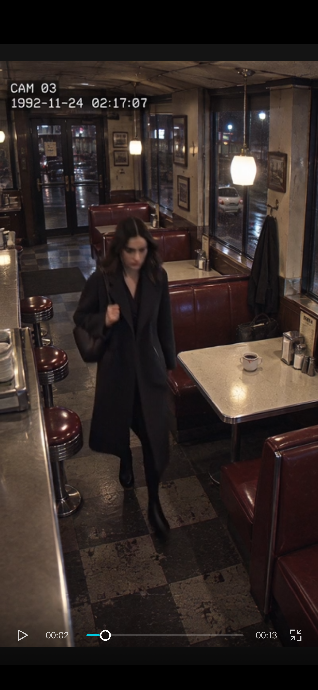
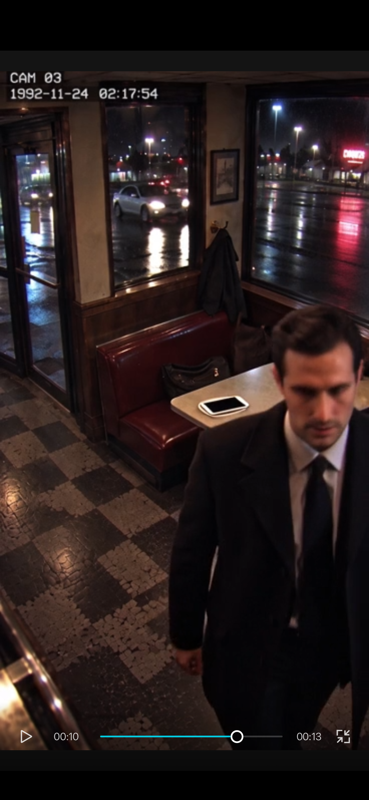

PANIC OPERATOR ARCHIVE
She Was Already Gone
Public fragment
This page is the short public fragment. The complete record, full stills, and operator close live in the sealed tray on Patreon.
Fragment only.
01 / Case log
CAM 03 holds on a roadside diner during rain. A woman occupies the window booth until an unidentified man crosses the camera's line of sight. When he clears the aisle, the seat is empty. The coat, handbag, phone, and unfinished coffee do not leave with her.
02 / Selected evidence / 2 of 7 plates

Arrival
The woman enters alone while the window booth is still unoccupied. No companion appears in the aisle or at the table.

After the obstruction
The man clears the camera's view. The booth is empty, but the coat, handbag, phone, and coffee remain in their recorded positions.
03 / Operator notes
- CAM / PLACE: CAM 03 / roadside diner; location withheld.
- TIME: surrounding overlays read 1992-11-24; one recovered frame reads 1992-11-23.
- CONTINUITY: the displayed clock remains near 02:17:54 across visible movement.
- OCCLUSION: an unidentified man blocks the booth for approximately one second.
- OBJECT BREAK: coat, handbag, phone, and unfinished coffee remain after the subject is absent.
- OPEN QUESTION: what happened during the obstruction?
- Remaining plates and close: sealed tray.
Continue with the full record
The public fragment ends here. The sealed record contains all seven plates, the chronology review, and the operator close.